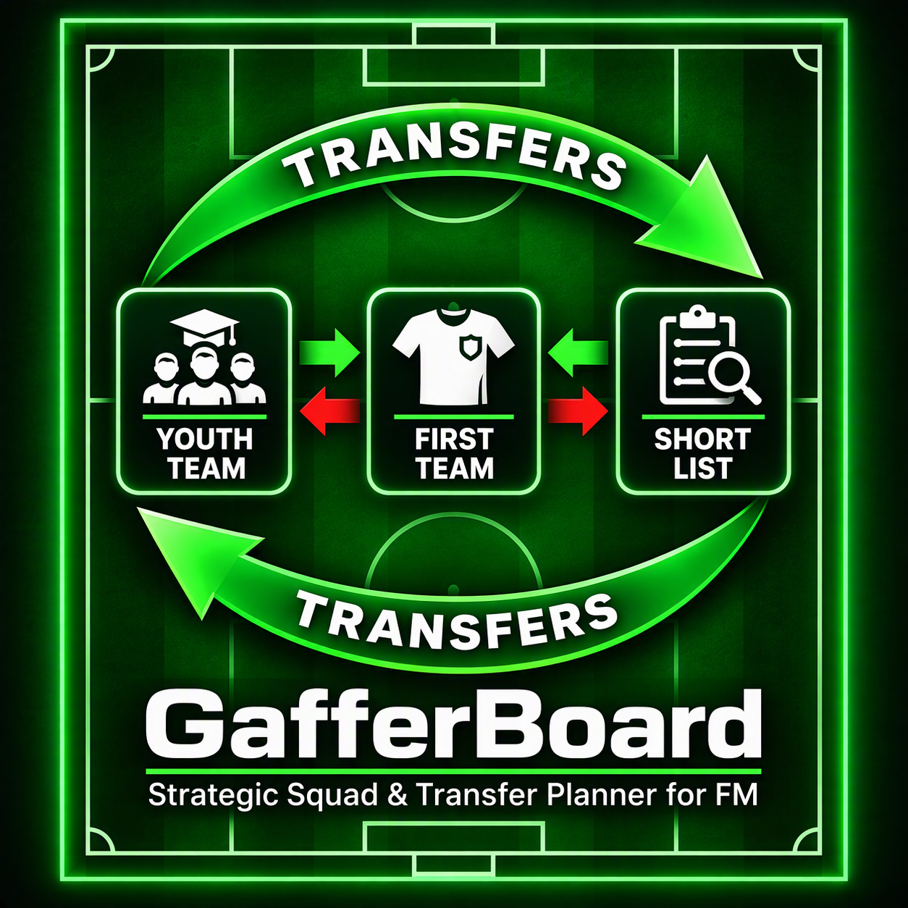

Understand Your Squad
See squad depth, backups and position coverage on one pitch.
Get a clear visual overview of your Football Manager squad, from first team to academy, and plan the seasons ahead before they happen.

See squad depth, backups and position coverage on one pitch.
Keep, loan, sell and buy or replace, with the budget for every window.
Track youth prospects and plan squad development several seasons ahead.
No registration required. No advertisements. 100% free.
GafferBoard gives you complete control of your first-team and youth squads. Build first- and second-choice depth charts, promote talents as they develop, and plan years ahead with sales, replacements from your shortlist or academy, and transfer window budgets.
From your save to a plan you can follow, in four steps.
Start from your own game. Load your FM27 savegame and shortlists, or open a plan you saved earlier.
GafferBoard only reads your save. It never changes it.
Don’t waste time clicking between multiple Football Manager screens. GafferBoard puts your whole squad, and your plans for it, in one place.
The lineup view shows your formation on a pitch with up to three players for every position. Show age, star rating, value or contract next to each name, and click the coloured dot to mark a player as keep, consider or sell.
It helps you answer questions like:
Switch to the squad building view and see every position as a row: who is in the squad now, who is out on loan and who you plan to sell, and in which transfer window. Organise players into:
Choose who replaces a player who leaves, from your shortlist or your academy, and see contract years next to every name, so you know who steps up before a contract runs out. Then build a long-term roadmap for how your squad should evolve, from academy player to first-team regular.
Understand where your squad is strong and where future problems may be developing.
Review squad quality, potential, age profile, contract situations, homegrown status and position strength before you make important decisions.
See an overview of the transfers that have been made and the ones that are planned, window by window.
The budget is integrated from your own savegame, so every plan is checked against your real finances.
Download GafferBoard today.
No registration required. No advertisements. No subscriptions.
Download Latest ReleaseYes. It is completely free, with no registration, no advertisements and no subscription.
No. GafferBoard only reads your savegame. Your own notes and plans are stored separately on your computer.
Yes. The lineup page works on its own. The transfer and analysis pages are there when you want them.
No. The AI report is optional. You can use Google Gemini with your own key, or a local Ollama model that stays on your PC.
Only anonymous usage events, such as starting the app, switching pages or loading a save. It never sends player data, file paths or personal information.
No. GafferBoard is an unofficial fan-made tool and is not connected to Sports Interactive or SEGA.
GafferBoard is developed by a Football Manager player in spare time, and it is completely free to use.
If it helps you manage your saves, consider supporting future development. It’s never expected, and always appreciated.